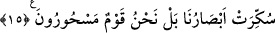
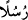

GÖKTEN BİR KAPI
AÇSAK DA…
10. Andolsun, senden önceki milletler arasında da elçiler gönderdik.
11. Onlara bir peygamber gelmeyedursun, hemen onunla alay ederlerdi.
12. İşte böylece biz onu, (inkârcılığı) suçluların kalplerine sokarız.
13. Öncekilerin başına gelenlerden ders almaları gerekirken onlar hâlâ buna
(Kur’an’a) inanmıyorlar.
14. Onlara gökten bir kapı açsak da oradan yukarı çıksalar,
15. “Gözlerimiz boyandı, daha doğrusu bize büyü yapılmıştır” derler.
“Andolsun, senden önceki milletler arasında da” yâni onların fırka ve bölükleri
arasında da “elçiler gönderdik.”
Âyetin metninde ‘
(elçiler)’ kelimesi, ibâre kendisine delâlet ettiğinden dolayı
zikredilmemiştir.
fiîa (fırka, bölük) kelimesi, bir metot ve görüşte hemfikir olan grup mânâsınadır.
Çoğulu şiya‘dır. Böyle isimlendirilmeleri, grup ferdlerinin birbirlerini tutup
birbirlerinin peşinden gitmesi sebebiyledir. fiîa da bu kelimeyle ilgilidir. Bu mezheb,
Hz. Ali’nin peşinden giden, Rasûlullah (s.a.)’den sonra Hz. Ali’nin devlet başkanı
olduğuna hükmeden ve devlet başkanlığı müessesesinin ondan ve onun çocuklarından
ayrılamayacağına inanan kişilerin mezhebidir.
Önceki ümmetlerin guruplarına elçi gönderilmesinin mânâsı, emredip yasakladıkları
dînî hususlarda kendilerine uysunlar diye her bir elçinin bir gruba peygamber
kılınmasıdır.
11. Onlara bir peygamber gelmeyedursun, hemen onunla alay ederlerdi.
“Onlara”
Bu
gruplardan
birine,
kendilerine
mahsus
“bir
peygamber